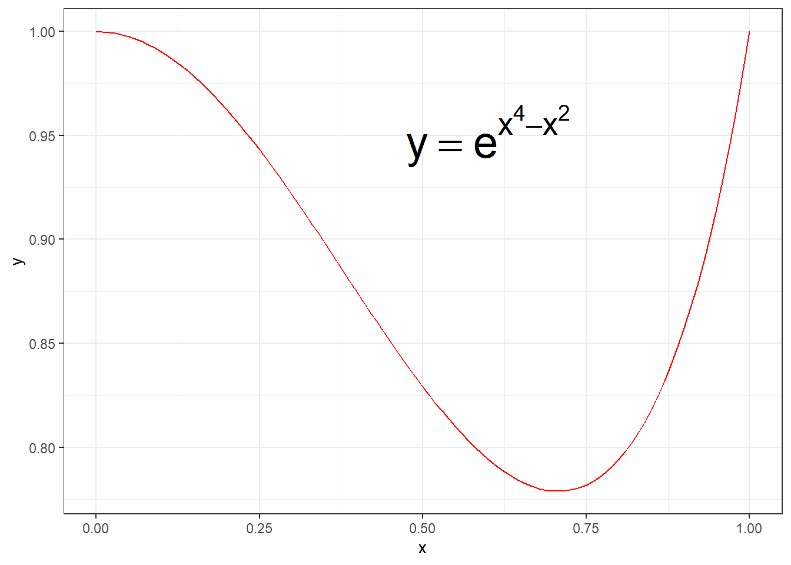

```{r}
set.seed(5172013)
```Day 4 Lab Monte Carlo Integration Solutions
Monte Carlo integration
Example 1: integral of \(e^{x^4 - x^2}\) over [0,1]
Define an integrand
```{r}
integrand_function <- function(x){
return(exp(x^4 - x^2))
}
```Plot the integrand on the interval [0,1]
```{r}
library(ggplot2)
plot_data <- data.frame(x = seq(0, 1, length = 100)) # Make a vector for the x values
ggplot(data = plot_data, aes(x)) +
geom_function(fun = integrand_function, colour = "red") +
theme_bw() +
annotate(
geom = "text",
x = 0.6,
y = 0.95,
label = "y == e^{x^4 - x^2}",
parse = TRUE,
size = 10
)
```
Deterministic numerical integration from 0 to 1
Notice that we are passing function integrand_function as an argument. Also, the integral can be seen as \(E(e^{U^4 - U^2})\), where \(U \sim Uniform(0, 1)\).
```{r}
det_int <- integrate(integrand_function, lower = 0, upper = 1)
```The function integrate() returns an object, not a value to find out what is in the object, type names(det_int)
```{r}
names(det_int)
det_int$value
det_int$message
```[1] "value" "abs.error" "subdivisions" "message" "call"
[1] 0.8785237
[1] "OK"Monte Carlo integration
By default runif() defines uniform distribution on [0,1]
```{r}
mcarlo_iterations <- 1000
unif_sample <- runif(mcarlo_iterations)
```arithmetic average
```{r}
(mcarlo_int = mean(integrand_function(unif_sample))) # Putting parentheses around line prints value
```[1] 0.8794199Monte Carlo error
```{r}
(mcarlo_error <- sd(integrand_function(unif_sample)) / sqrt(mcarlo_iterations))
```[1] 0.002431959Monte Carlo 95% confidence interval
```{r}
(c(
mcarlo_int - 1.96 * mcarlo_error,
mcarlo_int + 1.96 * mcarlo_error
))
```[1] 0.8746533 0.8841866Compare to the deterministic numerical integration
```{r}
(det_int)
```0.8785237 with absolute error < 1e-14Example 2: second moment of the Beta distribution \(X \sim Beta(\alpha, \beta)\)
```{r}
alpha <- 2
beta <- 2
```- theory tells us that \(E(X^2) = \frac{\alpha(\alpha + 1)}{(\alpha + \beta + 1)(\alpha + \beta)}\)
```{r}
(beta_2nd_moment_theory <- alpha * (alpha + 1) / ((alpha + beta + 1) * (alpha + beta)))
```[1] 0.3- deterministic integration
```{r}
beta_integrand <- function(x){
return(x^2 * dbeta(x, shape1 = alpha, shape2 = beta))
}
(beta_2nd_moment_det <- integrate(beta_integrand, lower = 0, upper = 1))
```0.3 with absolute error < 3.3e-15- Monte Carlo integration
```{r}
beta_mcarlo_iterations <- 1000
beta_sample <- rbeta(beta_mcarlo_iterations, shape1 = alpha, shape2 = beta)
(beta_2nd_moment_mc <- mean(beta_sample^2))
```[1] 0.298036Monte Carlo errors
```{r}
(beta_mcarlo_error <- sd(beta_sample^2) / sqrt(beta_mcarlo_iterations))
```[1] 0.007272444Monte Carlo 95% confidence intervals
```{r}
c(
beta_2nd_moment_mc - 1.96 * beta_mcarlo_error,
beta_2nd_moment_mc + 1.96 * beta_mcarlo_error
)
```[1] 0.2837821 0.3122900Compare the three answers
```{r}
beta_2nd_moment_theory
beta_2nd_moment_det
beta_2nd_moment_mc
c(
beta_2nd_moment_mc - 1.96 * beta_mcarlo_error,
beta_2nd_moment_mc + 1.96 * beta_mcarlo_error
)
```[1] 0.3
0.3 with absolute error < 3.3e-15
[1] 0.298036
[1] 0.2837821 0.3122900Exercise 1
Use:
deterministic integration to find the 4th moment of a beta distribution with parameters alpha = 2, beta = 5
Monte Carlo integration to find the 4th moment of a beta distribution with parameters alpha = 2, beta = 5
Compute Monte Carlo error and confidence intervals of your estimate(s) from part b.
Exercise 1 solution
```{r}
alpha <- 2
beta <- 5
```- deterministic integration
```{r}
beta_integrand <- function(x){
return(x^4 * dbeta(x, shape1 = alpha, shape2 = beta))
}
(beta_4th_moment_det <- integrate(beta_integrand, lower = 0, upper = 1))
```0.02380952 with absolute error < 2.6e-16- Monte Carlo integration
```{r}
beta_mcarlo_iterations <- 1000
beta_sample <- rbeta(beta_mcarlo_iterations, shape1 = alpha, shape2 = beta)
(beta_4th_moment_mc <- mean(beta_sample^4))
```[1] 0.02468678- Monte Carlo error and 95% confidence intervals
```{r}
(beta_mcarlo_error <- sd(beta_sample^4) / sqrt(beta_mcarlo_iterations))
c(
beta_4th_moment_mc - 1.96 * beta_mcarlo_error,
beta_4th_moment_mc + 1.96 * beta_mcarlo_error
)
```[1] 0.001560208
[1] 0.02162877 0.02774478Compare the two answers
```{r}
beta_4th_moment_det
beta_4th_moment_mc
c(
beta_4th_moment_mc - 1.96 * beta_mcarlo_error,
beta_4th_moment_mc + 1.96 * beta_mcarlo_error
)
```0.02380952 with absolute error < 2.6e-16
[1] 0.02468678
[1] 0.02162877 0.02774478Exercise 2
Use:
deterministic integration to approximate integral of \(\exp(-x^5)\) on \([0, \infty]\)
Monte Carlo integration to approximate integral of \(\exp(-x^5)\) on \([0, \infty]\). Hint: Uniform sampling won’t work, because uniform distribution is not defined on \([0, \infty]\), use exponential distribution samples instead – think about how to write the desired integral in terms of expectation
compute Monte Carlo error and confidence intervals of your estimate(s) from part b
compare Monte Carlo error of the procedure using two different rates of the exponential distribution
Exercise 2 Solutions
Define function
```{r}
integrand_function2 <- function(x){
return(exp(-x^5))
}
```Deterministic integration
```{r}
(det_int2 <- integrate(integrand_function2, lower = 0, upper = Inf))
```0.9181687 with absolute error < 1.3e-07Monte Carlo
```{r}
mcarlo_iterations2 <- 1000000
exp_rate <- 0.6
exp_sample <- rexp(mcarlo_iterations2, rate = exp_rate)
#arithmetic average
(mcarlo_int2 <- mean(integrand_function2(exp_sample) / dexp(exp_sample, rate = exp_rate)))
```[1] 0.916192Monte Carlo error
```{r}
(mcarlo_error2 = sd(integrand_function2(exp_sample) / dexp(exp_sample, rate = exp_rate)) / sqrt(mcarlo_iterations2))
```[1] 0.0009449927Monte Carlo 95% confidence interval
```{r}
c(mcarlo_int2 - 1.96 * mcarlo_error2, mcarlo_int2 + 1.96 * mcarlo_error2)
```[1] 0.9143398 0.9180442Compare to the deterministic numerical integration
```{r}
det_int2
```0.9181687 with absolute error < 1.3e-07Importance sampling
Define a threshold value and number of Monte Carlo samples
```{r}
my_const <- 4.5
sim_size <- 1000000
```true probability of interest
```{r}
(true_prob <- pnorm(my_const, lower.tail = FALSE))
```[1] 3.397673e-06naive Monte Carlo estimate
```{r}
naive_samples <- ifelse(rnorm(sim_size) > my_const, yes = 1, no = 0)
(naive_est <- mean(naive_samples))
```[1] 0importance sampling estimate
```{r}
shift_exp <- rexp(sim_size, rate = 1) + my_const
is_samples <- dnorm(shift_exp) / exp(-(shift_exp - my_const))
(is_est <- mean(is_samples))
```[1] 3.402526e-06```{r}
print(true_prob)
print(naive_est)
print(is_est)
```[1] 3.397673e-06
[1] 0
[1] 3.402526e-06Computing Monte Carlo variances
```{r}
(naive_var_mc <- var(naive_samples) / sim_size)
(is_var_mc <- var(is_samples) / sim_size)
```[1] 0
[1] 1.949041e-17Computing Monte Carlo confidence intervals
```{r}
# Naive (not very useful, usually variance estimate is degenerate):
c(naive_est - 1.96 * sqrt(naive_var_mc), naive_est + 1.96 * sqrt(naive_var_mc))
# Importance Sampling:
c(is_est - 1.96 * sqrt(is_var_mc), is_est + 1.96 * sqrt(is_var_mc))
```[1] 0 0
[1] 3.393873e-06 3.411179e-06